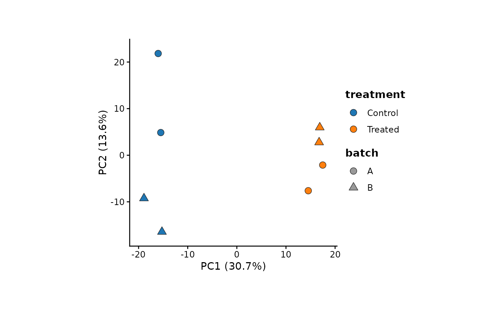
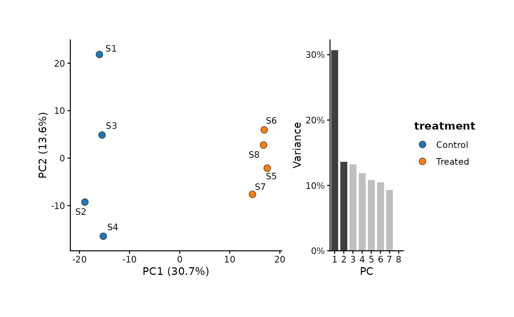

Plots the samples on two principal components, coloured,
shaped and labelled by sample covariates, with the
variance of each PC in the axis titles, optional ellipses per
group and an optional scree panel. Takes a prcomp
result, or a normalized features x samples matrix, of which
the most variable features are used. Square panel of a fixed
size; save it with save_plot; the scores and
covariates behind it are returned by
export_source_data.
Usage
plot_pca(
x,
metadata = NULL,
color.by = NULL,
shape.by = NULL,
label.by = NULL,
dims = c(1, 2),
n.top = 500,
center = TRUE,
scale = FALSE,
ellipse = FALSE,
ellipse.level = 0.95,
ellipse.type = c("t", "norm"),
scree = FALSE,
scree.n = 10,
cols = NULL,
pt.size = 3,
label.size = NULL,
panel.width = 3,
panel.height = panel.width,
legend.position = "right",
bg = "transparent",
seed = 42
)Arguments
- x
A
prcompresult (samples as rows of `x$x`), or a normalized features x samples matrix or data frame (e.g.SummarizedExperiment::assay(DESeq2::vst(dds))oredgeR::cpm(y, log = TRUE)), with sample names as column names. Raw counts should not be used: their PCA reflects library size and the few most highly expressed genes- metadata
Data frame of sample covariates, with sample names as row names (in any order; extra rows are ignored). Needed for `color.by`, `shape.by` and `label.by` other than TRUE. Default is NULL
- color.by
Column of `metadata` to colour samples by: discrete (character, factor, logical) or continuous (numeric). Default is NULL (one colour)
- shape.by
Column of `metadata` (discrete, at most 5 levels) to give samples different (filled) shapes. Default is NULL
- label.by
Labels of the samples (needs ggrepel): TRUE for the sample names, a column of `metadata`, or NULL (default) for none
- dims
Two PCs to plot, default `c(1, 2)`
- n.top
Matrix input: number of most variable features used, default 500 (as
DESeq2::plotPCA()); NULL or Inf for all- center, scale
Matrix input: whether features are centred (default TRUE) and scaled to unit variance (default FALSE, so that features keep their own variance, as is usual for log-scale expression) before the PCA
- ellipse
Whether to draw an ellipse around the samples of each `color.by` group (discrete), for groups of at least 4 samples. Default is FALSE
- ellipse.level
Confidence level of the ellipses, default 0.95
- ellipse.type
"t" (default; multivariate t, robust to a stray sample) or "norm" (multivariate normal), as in
ggplot2::stat_ellipse()- scree
Whether to add a panel of the the right, the plotted PCs in dark. Default is FALSE
- scree.n
Number of PCs in the scree panel, default 10
- cols
Colours of `color.by`: for a discrete covariate NULL (default; "scanpy-20"), a qualitative palette name, or colours named by level; for a continuous one NULL (default; "seq-blue"), a palette name or colours from low to high. With no `color.by`, one colour (default "grey40")
- pt.size
Size of the points, default 3
- label.size
Size of the labels in mm. If NULL (default), the small text size of the theme (9 pt)
- panel.width
Width of the panel in inches, default 3
- panel.height
Height of the panel in inches. Default is `panel.width` (a square panel)
- legend.position
Position of the legend, default "right"
- bg
Background colour, default is "transparent"
- seed
Random seed for the placement of labels, default is 42
Details
The PCA was run on, i.e. of the `n.top` features used for a matrix. Messages report the number of features and samples used.
The source data (export_source_data) hold one row per
sample: the sample name, the scores on the first PCs (up to 10) and the
covariates; with `scree = TRUE`, a second table holds the
PC.
Examples
set.seed(1)
m <- matrix(rnorm(2000 * 8, mean = 6), nrow = 2000,
dimnames = list(paste0("Gene", 1:2000), paste0("S", 1:8)))
m[1:200, 5:8] <- m[1:200, 5:8] + 2 # a treatment effect
meta <- data.frame(treatment = rep(c("Control", "Treated"), each = 4),
batch = rep(c("A", "B"), 4),
row.names = colnames(m))
plot_pca(m, meta, color.by = "treatment", shape.by = "batch")
#> PCA of 500 features x 8 samples

plot_pca(m, meta, color.by = "treatment", label.by = TRUE, scree = TRUE)
#> PCA of 500 features x 8 samples

if (FALSE) { # \dontrun{
vsd <- DESeq2::vst(dds)
p <- plot_pca(SummarizedExperiment::assay(vsd), as.data.frame(SummarizedExperiment::colData(vsd)),
color.by = "condition", ellipse = TRUE)
save_plot(p, "pca.pdf")
} # }